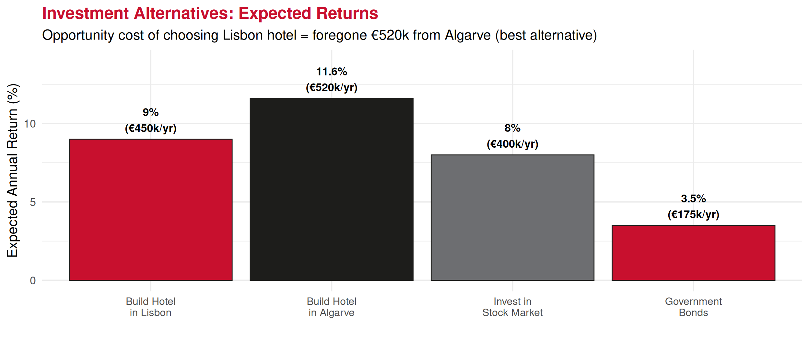
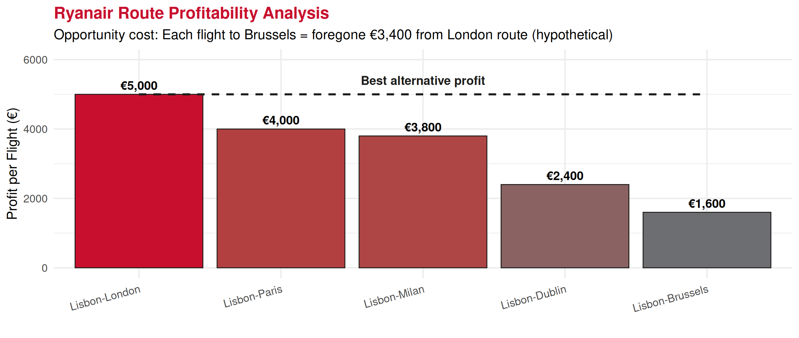

Economics Fundamentals
Lecture 3: Rationality, Choices and Opportunity Cost
Recap: Previous Lectures ⏪
Lecture 1: Economics, Scarcity, Efficiency, Macro vs. Micro
Lecture 2: Three economic problems (WHAT, HOW, FOR WHOM) and economic systems (Market, Planned, Mixed)
. . .
🎯 Today’s Focus:
🧠 How do people make economic decisions?
🤔 What is rationality?
💰 Opportunity cost — one of economics’ most powerful concepts!
Economic Rationality
What Does “Rational” Mean? 🧠
Economic Rationality
People are rational decision-makers who seek to maximize their well-being (utility) by using cost-benefit analysis and responding predictably to incentives.
. . .
Key characteristics:
✅ People have clear preferences
✅ They seek to maximize their well-being (utility)
✅ They respond predictably to incentives
✅ They use cost-benefit analysis
💡 Important: Rational ≠ Perfect or emotionless! People can be rational within their information and cognitive limits (bounded rationality)
Cost-Benefit Principle ⚖️
The Foundation of Rational Choice
An action should be undertaken if and only if the benefits exceed the costs.
. . .
Decision Rule:
\[\text{Decision Rule: } \begin{cases} \text{Do it} & \text{if } Benefits \geq Costs \\ \text{Don't do it} & \text{if } Benefits < Costs \end{cases}\]
. . .
In practice:
- Benefits = What you gain
- Costs = What you give up
- Compare net benefit of alternatives
Tourism Example: Cost-Benefit 🏛️
Should a tourist visit the Belém Tower in Lisbon?
Benefits ✅
📷 Photos & memories
📚 Educational value
❤️ Historical experience
😄 Satisfaction
Estimated value: €20
Costs 💸
🎫 Entry ticket: €6
🚌 Travel time: 30 min
⌛ Waiting time: 20 min
🕐 Value of time: €15/hr
Time cost: €12.50
Total cost: €18.50
👉 Decision: Benefits (€20) > Costs (€18.50) → Visit!
But if waiting time increases to 60 min, costs rise to €28.50 → Don’t visit!
Marginal Analysis
Decisions at the Margin 📈
Marginal Analysis
Decisions are made at the margin — evaluating the additional benefit versus the additional cost of one more unit.
. . .
Key terms:
⬆️ Marginal Benefit (MB): Benefit from one additional unit
⬆️ Marginal Cost (MC): Cost of one additional unit
. . .
Optimal Decision Rule:
\[\text{Continue activity while } MB \geq MC\]
Stop when \(MB < MC\)
Marginal Analysis: Hotel Rooms 🏨
Should a hotel accept one more booking?
Opportunity Cost
The Most Important Concept! 🌟
Opportunity Cost
The value of the best alternative foregone when making a choice. It’s what you give up, not what you pay.
. . .
Key Points 🔑
👉 It’s what you give up, not what you pay
👉 It’s the next-best alternative (not all alternatives)
👉 It includes both explicit (money) and implicit costs (time, foregone opportunities)
Decision Rule with Opportunity Cost
When deciding: You should choose option A over B if:
\[\overbrace{B_A}^{\text{Gross Benefit of}\ A} \geq \underbrace{\overbrace{C_A}^{\text{Monetary Cost}} + \underbrace{(B_B-C_B)}_{\text{Surplus of best alternative}}}_{\text{Opportunity Cost of}\ A}\]
💡 In simpler terms: Choose A if its benefits exceed both its direct costs AND what you’re giving up from the best alternative!
Opportunity Cost Examples 💰
Simple Example: You have €100 and 4 hours free on Saturday afternoon.
Options (value, cost, time):
A. Visit museum (€15, €10, 3h)
B. Beach trip (€20, €0, 4h)
C. Movie (€22, €12, 2h)
D. Study at home (€10, €0, 4h)
If you choose A (museum):
💸 Explicit cost: €10
🤔 Opportunity cost: Value of best alternative foregone
- Can’t go to beach (value: €20)
- Total opportunity cost: €10 + €20 = €30
Opportunity Cost in Tourism Investment 🏢

Sunk Costs: Ignore Them! 🚫
Sunk Cost
A cost that has already been incurred and cannot be recovered, regardless of what decision you make now. Sunk costs should be ignored in decision-making!
. . .
Examples of sunk costs:
❌ Non-refundable deposits
❌ Past advertising expenses
❌ Money already spent on failed projects
❌ Time already invested (can’t get it back)
⚠️ Common mistake: “I’ve already invested so much, I must continue!”
✅ Correct thinking: “What are my future costs and benefits from here?”
Sunk Cost Example: Tourism Investment 🚧
Scenario: Hotel construction halfway done
Spent so far (SUNK):
- €2M on land
- €3M on construction
- Total: €5M
❌ Cannot be recovered!
To complete (FUTURE):
- €4M more needed
- Expected profit: €500k/year
❓ Should you finish?
👉 Correct analysis: Ignore the €5M sunk cost!
Compare: €4M future cost vs. future benefits
If NPV of future benefits > €4M → Finish it!
If NPV of future benefits < €4M → Abandon! (Don’t throw good money after bad)
Trade-offs in Tourism Policy ⚖️

👉 Opportunity cost of increasing cultural preservation by €15M = €20M less for mass tourism infrastructure
Making Better Decisions ✅
Checklist for Rational Economic Decisions:
1️⃣ Identify all alternatives
2️⃣ Estimate benefits of each alternative
3️⃣ Estimate costs (including opportunity costs!)
4️⃣ Ignore sunk costs (they’re irrelevant)
5️⃣ Consider marginal changes (not just totals)
6️⃣ Choose alternative with highest net benefit
💡 Remember: Good decisions maximize net benefit (Benefits - Opportunity Costs)
Common Decision Mistakes ❌
Mistake 1: Ignoring opportunity costs
- Thinking only about money paid
- Not considering value of alternatives foregone
Mistake 2: Counting sunk costs
- “I’ve already invested so much”
- Looking backward instead of forward
Mistake 3: Ignoring marginal analysis
- Looking at totals instead of additional units
- Not considering “one more” decisions
Mistake 4: Not comparing net benefits
- Choosing highest benefit option
- But ignoring that it also has highest cost!
Real Business Case: Ryanair Strategy ✈️

👉 Decision: Cancel Brussels route, add London frequency → Better use of aircraft (opportunity cost logic)
Key Concepts Summary 📋
| Concept | Definition |
|---|---|
| Rationality | People maximize well-being via cost-benefit analysis |
| Cost-Benefit Principle | Do it if benefits ≥ costs |
| Marginal Analysis | Decisions at the margin (additional units) |
| Opportunity Cost | Value of best alternative foregone |
| Sunk Costs | Ignore them! (already spent, irrelevant) |
| Trade-offs | Choosing one thing means giving up another |
Exercises 📝
Practice Time!
Real-world applications of opportunity cost.
Exercise 1: Multiple Choice
A hotel owner can use her restaurant space for:
- Option A: Fine dining (€80k annual profit)
- Option B: Buffet restaurant (€60k annual profit)
- Option C: Rent to external operator (€50k annual rent)
She chooses Option A. What is the opportunity cost of this decision?
A. €80,000
B. €60,000
C. €50,000
D. €110,000
Answer: B (€60,000) - Opportunity cost = value of best alternative foregone. The next-best alternative to fine dining (€80k) is buffet (€60k), NOT the sum of all alternatives.
Exercise 2: Multiple Choice
You bought a non-refundable €200 ticket to a concert. On the day of the concert, you feel ill. A friend offers you €50 for the ticket (transferable). What is the opportunity cost of ATTENDING the concert?
A. €200
B. €150
C. €50 + discomfort from illness
D. €250
Answer: C (€50 + discomfort) - The €200 is SUNK (can’t recover even if you don’t go). If you attend: you give up €50 (could sell) + endure discomfort. Opportunity cost = what you give up by attending.
Exercise 3: Open Question
Scenario: A tour operator in Porto must decide between two summer season strategies:
Strategy A: Focus on luxury tours
- Expected revenue: €500,000
- Variable costs: €280,000
- Fixed costs already committed: €80,000
Strategy B: Focus on budget tours
- Expected revenue: €420,000
- Variable costs: €200,000
- Same fixed costs: €80,000
Questions:
Calculate profit for each strategy
What is the opportunity cost of choosing Strategy A?
Which strategy should be chosen and why?
Are fixed costs relevant to the decision? Explain.
Exercise 3: Solution (Part a & b)
a) Profit calculation:
Strategy A (Luxury): \[\text{Profit}_A = €500,000 - €280,000 - €80,000 = €140,000\]
Strategy B (Budget): \[\text{Profit}_B = €420,000 - €200,000 - €80,000 = €140,000\]
Both strategies have equal profit!
b) Opportunity cost of Strategy A:
Opportunity cost = Direct Cost + Profit from best alternative foregone = €140,000 + €360,000 = €500,000 (Strategy B profit)
Exercise 3: Solution (Part c & d)
c) Which strategy to choose?
From pure profit perspective: Indifferent (both €140,000)
But consider other factors: Risk, reputation, market trends, resource requirements
👉 Recommendation: Strategy B (budget) because:
- Lower variable costs (€200k vs €280k) = less risk
- Higher revenue-to-variable-cost ratio: 2.1 vs. 1.79
- More resilient to demand fluctuations
d) Are fixed costs relevant?
❌ NO! Fixed costs (€80,000) are SUNK — already committed regardless of strategy choice.
✅ Only variable costs matter for this decision (they differ between strategies).
This is a key example of ignoring sunk costs in decision-making!
Next Lecture 📚
Lecture 4 (February 13, 2026):
- Production Possibilities Frontier (PPF)
- Efficiency, Trade-offs, and Economic Growth
- Comparative Advantage and Specialization
💡 Preparation: Review today’s opportunity cost concept — it’s the foundation for understanding PPF!
Thank You! 👋
Questions?
📧 paulo.fagandini@ext.universidadeeuropeia.pt
Next class: Thursday, February 13, 2026
Opportunity cost is one of the most powerful concepts in economics. Make sure students understand it deeply — it will appear throughout the entire course!